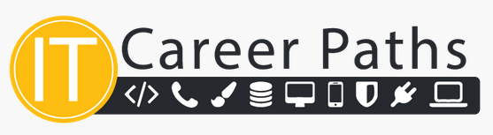

(Source: University of Wisconsin)
Jules - Cyber security analyst:
"A role as a cyber security analyst will require skills, knowledge, qualifications and most likely certifications. By completing my degree with a focus on networking and cyber security, I hope to gain some skills and knowledge, as well as qualifications. I will then need to do further study to complete examinations and gain certifications in fundamental knowledge areas (general IT skills and troubleshooting, networking, cyber security)- the certifications I would look to attain would include CompTIA A+, CompTIA Network+ and CompTIA Security+. Having both industry certifications and tertiary qualifications should (hopefully) provide an advantage when looking to enter the IT workforce.
Working in the industry will allow me to gain experience in the field and in time I could look to complete advanced security certifications (along the lines of CISSP or CISSM) to allow me to pursue a “senior” or management role."
Ishaan - IT services account executive:
“At this moment in time, my ideal career path would be completing this degree in IT at RMIT, concurrently trying to further my knowledge in cybersecurity and artificial intelligence. An internship at a firm would ideally be the next step after the degree and is also something which I'm trying to achieve during my studies in this degree.”

(Source: IT Jobs)
Nima - Cyber security specialist:
“I desire to work in the cybersecurity industry and become a cyber security specialist, I plan to achieve this wish by finishing my IT degree, getting an intern job in a cyber security role in a credible company and working my way up to the top positions by continuously improving and reinventing myself.”
Tommy - IT technician:
“I'm currently focusing on completing this degree. During this degree, I might find a part-time job to gain experience in the industry. When I'm finished with my studies, I'd ideally want to transition to a full-time job wherever I decide to work.”
Sam - Software developer:
“Currently my plan is to continue my study to obtain my degree, to allow me to further pursue my career in software development and game development. After uni, I would probably look to get a starting job as a junior software developer or as web developer to obtain some experience so I could then further my career in software and game development creating virtual and augmented reality games and developing game engines.”

(Source: SYP)
Comparisons:
Based off previous research in assignment two, working as a software developer, Sam would likely have access to the most employment opportunities whereas Nima, working in a specialist role, will likely be more limited- however, every team member has an ideal job in industries which are expected to continue to grow for the foreseeable future.
Sam is the only team member whose work would focus on programming and software development. Three members (Julian, Nima and Ishaan) have ideal jobs focused on cyber security (or elements thereof) however the roles themselves are quite different- Ishaan’s role would be more based on product knowledge and sales (offering cloud services, cloud security and IT service management services to clients), while Julian’s and Nima’s roles are more hands on, as their roles would involve direct application of cyber security skills and knowledge. Tommy’s ideal job is also of a more practical nature, building PCs, setting up networks and performing fault troubleshooting across a variety of domains (PC hardware and software, Wi-Fi networks and email etc).
Some other notable differences revolve around clients and employers; Ishaan and Tommy will likely have direct interaction with their clients whereas Julian, Nima and Sam would likely have little outside client interaction. Ishaan’s clients are likely to be medium to large businesses while Tommy’s are likely to be small businesses or individuals. Ishaan’s role would likely only exist in a large business environment. Julian, Sam and Nima could theoretically be employed in a medium or large business- it is unlikely any of them would be directly employed by a small business. As an IT technician, Tommy could be employed by a small, medium or large business.
Both Ishaan and Nima have expressed interest in using internships to start their careers, while Julian will likely seek to attain certifications to enhance his employability however each team member will likely seek to start in an entry level role in their respective industries.